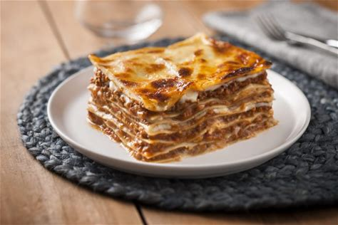

Lasagna

Lasagna is made by layering pasta sheets with rich meat sauce and creamy cheese sauce, then baking until golden and bubbling.
The process involves preparing a flavorful ragu (meat sauce), a béchamel or ricotta-based cheese mixture, and then assembling everything in layers before baking.
Ingridients:
- Lasagna noodles
- Ground beef
- Italian sausage
- Onion
- Garlic
- Carrots
- Celey
- Tomato Paste
- Crushed tomatoes
- Olive oil
- Salt
- Black Papper
- Fresh parsley
- Bay leaves
- Egg
- Milk
- Butter
- Flour
- Italian seasoning
Ordered to do list:
- Heat olive oil in a pan
- Aaute onion,garlic, carrots, and celery until soft
- Stir in tomato beef and cook until browed
- Simmer for 30-60 minutes unitl thick and flavorful
- Melt butter, whick in flour, slowly add milk, season with nutmeg, then stir in cheese
- pre heat the oven : set to 180 degreese
Home